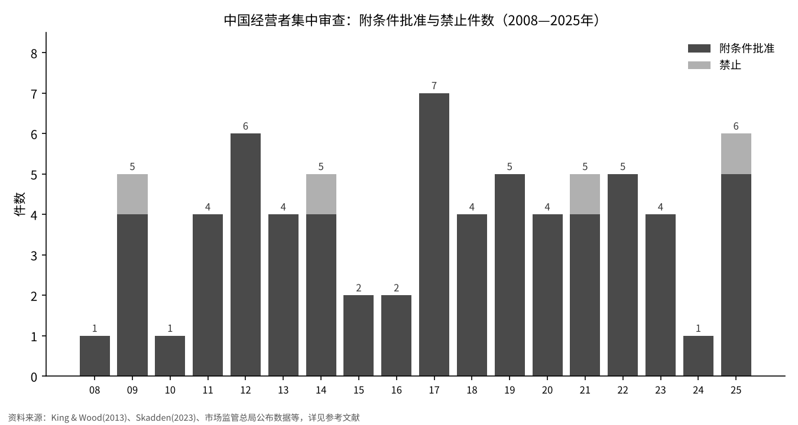
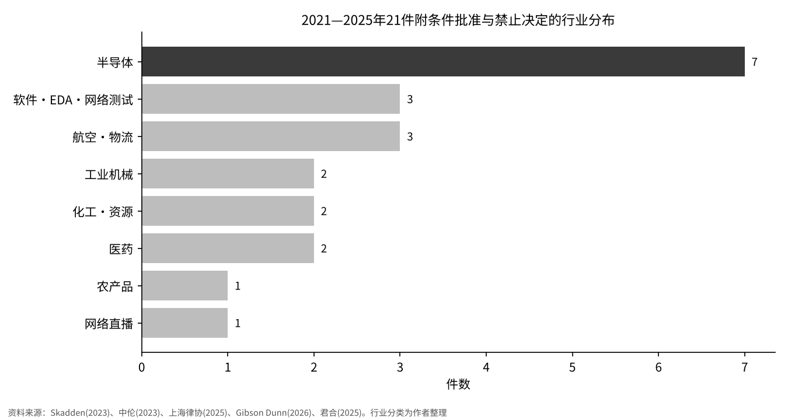

中国当局为何叫停并购？——把软银集团收购ABB机器人业务一案放进中国的审查记录中
2026年11月5日，瑞士ABB公司宣布，已接到软银集团（SBG）通知，中国当局禁止了SBG对ABB机器人业务的收购[1]。
本文要检验的问题是：在中国的反垄断审查中，涉及境外企业的收购被“禁止”或“附条件批准”的案件，集中在哪些行业、哪些时期？
本文把2008年至2025年公布的71件限制性决定按年份和行业排列，再看此次案件在这一记录中处于什么位置。
- 2008—2025年共有71件限制性决定，其中附条件批准67件、禁止4件。每年件数在1至7件之间，看不出持续上升的趋势；但占审查件数的比例从2014年的2.0%降至2025年的0.85%。
- 行业上，向半导体集中的程度在提高。2021—2025年的21件中，半导体7件（33%），居各行业之首；加上软件、EDA和网络测试则为10件（48%）。截至2020年的累计数据中，这一比例为48件中的10件（21%）。
- 据ABB公告，禁止ABB案的并非反垄断审查，而是外商投资安全审查工作机制办公室[1]。71件反垄断决定中没有经由这一渠道的案件，仅看反垄断记录，只能衡量“被叫停”风险的一部分。

问题与背景
SBG于2025年10月8日宣布，以53.75亿美元的企业价值（约8187亿日元）收购ABB的机器人业务。交易需获得欧盟、中国和美国监管机构的批准，原计划于2026年年中至下半年完成[2]。据ABB介绍，该业务2024年收入为23亿美元，约占集团收入的7%，员工约7000人[3]。ABB于2026年11月5日发布的公告转述SBG的通知称，中国外商投资安全审查工作机制办公室禁止了这项收购，并表示双方将继续就交易保持沟通[1]。共同社当天也作了相同报道[4]。
先说明几个用语。经营者集中审查，是指对合并、股权收购等改变企业控制关系的交易，由执法机构事先审查其是否具有排除、限制竞争效果的程序[5]。SAMR（国家市场监督管理总局）是目前负责这项审查的中国行政机关，此前由商务部（MOFCOM）负责。附条件批准，是指不禁止交易，但要求当事方剥离业务或承诺持续供货等、以减少对竞争不利影响为条件予以批准的决定[5]。
《反垄断法》规定，具有或者可能具有排除、限制竞争效果的集中应当予以禁止（第三十四条）；外资并购涉及国家安全的，还应当另行进行国家安全审查（第三十八条）[5]。作为国家安全审查规则的《外商投资安全审查办法》（2020年12月19日公布，2021年1月18日施行）规定，工作机制办公室设在国家发展改革委，审查对象包括外国投资者在关键技术等领域取得实际控制权的投资，特别审查后可作出禁止投资或附条件通过的决定[6]。也就是说，在中国叫停并购的渠道至少有两条。本文先考察反垄断审查的记录，再讨论此次案件的位置。
数据与方法
对象为2008年8月《反垄断法》施行至2025年底的全部附条件批准和禁止决定。年度件数按以下资料整理：2008—2012年依据金杜的案件列表[7]；2013—2022年依据Skadden表格推算的数值[8]；2016年的2件依据报道商务部年度通报的文章[9]；2023年依据SAMR公布的审结797件、附条件4件[10]；2024年附条件1件依据上海市律师协会的报告[11]；2025年完成审查706件、附条件5件、禁止1件依据新华社报道的SAMR数据[12]。
本文把整理出的序列与已公布的累计数进行了核对：截至2019年底附条件44件（立方律师事务所）[13]，截至2020年底48件（Xue与Gu）[14]，截至2022年底附条件57件、禁止3件、无条件批准4760件（Hu与Gong的论文）[15]，均相符。
行业方面，本文对2021—2025年的21件（附条件19件、禁止2件）逐案分类。案件名称取自Skadden[8]、中伦律师事务所[16]、SAMR[10]、上海市律师协会[11]、Gibson Dunn[17]和君合律师事务所[18]。分类由作者完成，半导体的范围与Skadden的划分一致。
结果

按年份看，件数在1至7件之间波动。最多的是2017年的7件，其次是2012年的6件和2025年的6件（含禁止1件）。2024年只有1件。4件禁止案分别是2009年可口可乐收购汇源、2014年三家航运公司设立P3网络中心、2021年虎牙与斗鱼合并，以及2025年盐酸罂粟碱原料药经营者收购注射剂企业[18]。2025年的禁止案被认为是首例对未达申报标准的交易进行审查、并要求已实施的集中恢复原状的案件[18]。
件数持平，但作为分母的审查件数增加了。限制性决定所占比例，2014年为审结245件中5件，即2.0%[19]；2023年为797件中4件，即0.50%；2025年为706件中6件，即0.85%[10][12]。Emch与Lyu估计，2022年8月修法前约为1.2%，修法后约为0.6%[20]。

行业构成因时期而异。2008年至2013年上半年的19件广泛分布在饮料、化工、医药、汽车、电气机械、零售等以制造业为主的领域[7]。2021—2025年的21件中，半导体7件，软件·EDA·网络测试3件，航空·物流3件，工业机械2件，化工·资源2件，医药2件，农产品1件，网络直播1件。
境外企业的参与程度也很高。据SAMR数据，2023年审结案件中有46%有外企参与[10]，2025年无条件批准案件中也有43.2%有外企参与[12]。2024年唯一的附条件批准案件——JX金属收购拓自达电线股权案，双方当事人均为日本企业[11]。
也有交易以不出现在记录中的方式终止。英特尔于2023年8月16日宣布，由于未能及时获得合并协议要求的监管批准，终止收购高塔半导体，并支付3.53亿美元终止费[21]。这类“超时”不计入决定件数。
敏感性分析
半导体所占比例会随案件定义和时间窗口的不同而明显变化。本文按六种定义重新计算。
| 定义与期间 | 半导体件数 | 分母 | 比例 |
|---|---|---|---|
| A 2011—2020年，仅附条件 | 10 | 42 | 23.8% |
| B 2008—2020年，附条件＋禁止 | 10 | 50 | 20.0% |
| C 2021—2025年，附条件＋禁止 | 7 | 21 | 33.3% |
| D 2021—2025年，仅附条件 | 7 | 19 | 36.8% |
| E 2021—2022年，仅附条件 | 5 | 9 | 55.6% |
| F 2021—2025年，半导体＋软件·EDA·网络测试 | 10 | 21 | 47.6% |
比例从20.0%到55.6%不等。窗口越短比例越高，是因为分母较小。尽管如此，无论采用哪种定义，2021年以后的比例都高于2020年以前，“半导体集中程度提高”这一结论在改变定义后依然成立。另一方面，像2024年那样全年只有1件的年份也存在，用单一年份的比例来讨论，波动会很大。
讨论
对半导体集中的常见解释是：中国是半导体的大买家，即使是境外企业之间的交易，对中国客户的供应也容易成为争点。Herbert Smith Freehills Kramer的论文指出，2018—2024年的26件附条件批准中有24件包含行为性条件，九成以上包含供应保障[22]。这些数字表明，条件的核心在于“继续向中国客户供货”。
也存在相反的看法。一种看法认为，反垄断审查被用作产业政策或对外博弈的工具；另一种看法则指出，截至2022年底的决定中98%以上为无条件批准[15]，半导体的集中可以用寡头垄断的市场结构来解释。本文的数据只涉及件数和行业，无法判断哪种看法正确。
ABB案是经由这一反垄断记录之外的渠道被叫停的。有报道称该交易已于2026年2月通过反垄断审查[23]，但本文未能在一手资料中确认。ABB和SBG均未公布禁止的理由，报道仅援引匿名消息来源，提及对数据转移的担忧等[23]。
数据存在局限。第一，撤回或放弃的申报不计入件数，2023年受理后撤回的有11件[10]。第二，2013—2022年的年度件数是根据二手资料重建的。第三，行业分类由作者完成。第四，外商投资安全审查的决定不公开，没有件数统计。第五，2026年的ABB案，除ABB公告和新闻报道外未能得到确认。
可能改变结论的证据包括：按行业公布撤回案件、公布外商投资安全审查的件数，以及2026年以后的附条件批准中非半导体行业占多数等。
结论
在中国反垄断审查中被作出限制性决定的案件，按时期看每年1至7件，没有明显偏向，占审查件数的比例反而下降。按行业看，2021年以后向半导体集中，在所检验的各种定义下都高于2020年以前。但像ABB案这样经由安全审查被叫停的交易不会出现在这一记录中，仅凭反垄断件数无法衡量在中国并购被叫停的难易程度。
我的看法
对于交易因国家许可而被叫停的风险，我从来没有细致地估算过。我尽量不做这类业务，希望做没有国别风险和政治风险的事业。我经营的是日本国内的餐厅、共享办公室和不动产业务，持有的是日本银行股和美国股票。把这份记录排列下来，我发现叫停交易的渠道有反垄断审查和安全审查两条，而后者连件数都看不到。看不见的风险，无从估算。所以，与其细致地测量这种风险，我想我会继续保持现在的做法：一开始就与之保持距离。
参考文献
- ABB, "Update on divestment of ABB Robotics", 2026-11-05, https://www.abb.com/global/en/news/140154/update-on-divestment-of-abb-robotics
- 软银集团, "Acquisition of ABB Ltd's Robotics Business", 2025-10-08, https://group.softbank/en/news/press/20251008
- ABB, "ABB to divest Robotics division to SoftBank Group", 2025-10-08, https://www.abb.com/global/en/news/129685/abb-to-divest-robotics-division-to-softbank-group
- 共同社（经OANDA Lab市场新闻转载）, 关于ABB机器人业务收购的报道, 2026-11-05, https://www.oanda.jp/lab-education/market_news/kn_2026110501001851/
- 全国人民代表大会常务委员会,《中华人民共和国反垄断法》（2022年6月24日修正）, JETRO转载, https://www.jetro.go.jp/ext_images/world/asia/cn/ip/law/pdf/origin/regulation20220801.pdf
- 国家发展改革委、商务部,《外商投资安全审查办法》（令第37号）, 2020-12-19, https://www.mofcom.gov.cn/dl/file/20211203230801.pdf
- Susan Ning, Hazel Yin, Ziqing Zheng, Kailun Ji（金杜律师事务所）, "Review of Merger Control and Merger Remedies Regime in China: From 2008-2013", 2013-08-23, https://www.chinalawinsight.com/2013/08/articles/compliance/review-of-merger-control-and-merger-remedies-regime-in-china-from-2008-2013/
- Andrew L Foster, Kexin Li, Julia Zhu（Skadden）, "China: Recent Remedy Cases Showcase Impact of Amended Anti-Monopoly Law", 2023-10-25, https://www.skadden.com/-/media/files/publications/2023/10/china_recent_remedy_cases_showcase_impact_of_amended_anti_monopoly_law.pdf
- China Law & Practice, "MOFCOM recaps 2016 merger reviews", 2017-02-09, https://chinalawandpractice.com/2017/02/09/mofcom-recaps-2016-merger-reviews
- 国家市场监督管理总局（中国质量报转载）,《2023年市场监管总局经营者集中案件审查情况解读》, 2024-01-25, https://m.cqn.com.cn/zj/content/2024-01/25/content_9023492.htm
- 上海市律师协会反垄断与反不正当竞争专业委员会,《2024年度经营者集中反垄断审查执法分析报告（上）》, 2025-12-12, https://www.lawyers.org.cn/info/7b76cb8cd0b846c7950920a70a01376a
- 新华社,《2025年市场监管总局完成经营者集中反垄断审查706件》, 2026-01-29, https://www.news.cn/20260129/c40f383543014195a6ca15f4406524f9/c.html
- 立方律师事务所,《2019反垄断年度盘点系列（三）——中国附条件批准经营者集中案件盘点》, 2020-03-11, https://www.lifanglaw.com/cn/cnflds/574.html
- Yi (Josh) Xue, Tian Gu（中伦律师事务所）, "China: Tougher Merger Control Enforcement in the Semiconductor Industry?", CPI Antitrust Chronicle, 2021-03, https://www.competitionpolicyinternational.com/wp-content/uploads/2021/03/6-China-Tougher-Merger-Control-Enforcement-in-the-Semiconductor-Industry-By-Yi-Josh-Xue-Tian-Gu.pdf
- Shengyan Hu, Jiong Gong, "Understanding merger control remedies in China", PLOS ONE 20(11): e0336795, 2025-11-21, https://journals.plos.org/plosone/article?id=10.1371/journal.pone.0336795
- 余昕刚等（中伦律师事务所）,《久违春风添暖意——中国反垄断2022年度盘点》, 2023-01-03, https://www.zhonglun.com/research/articles/9403.html
- Gibson Dunn, "Antitrust in China – 2025 Year in Review", 2026-03-30, https://www.gibsondunn.com/antitrust-in-china-2025-year-in-review/
- 许蓉蓉、杨晨、刘煜成（君合律师事务所）,《六年交易追溯被禁：首例未达申报标准被禁止集中案件评述》, 2025-07-25, https://junhe.com/legal-updates/2750
- 商务部（made-in-china.com转载）, "2014 Business Review XVIIII: Carry out Anti-monopoly Work According to Law and Maintain a Market Order with Fair Competition", 2015（具体日期未确认）, https://resources.made-in-china.com/article/policy-opinion/vnLxDVBlvmiu/2014-Business-Review-XVIIII-Carry-out-Anti-monopoly-Work-According-to-Law-and-Maintain-a-Market-Order-with-Fair-Competition
- Adrian Emch, Qing Lyu, "The year in review – a close look at China's merger control since the amendment of the Anti-Monopoly Law", 2024-01-25, https://www.hlc.com/en/publications/the-year-in-review-a-close-look-at-chinas-merger-control-since-the-amendment-of-the-anti-monopoly-law
- Intel, "Intel Announces Termination of Tower Semiconductor Acquisition", 2023-08-16, https://www.intc.com/filings-reports/all-sec-filings/content/0000050863-23-000078/titaniumpressrelease.htm
- Adelaide Luke, Howard Chan, Hazel Xu（Herbert Smith Freehills Kramer）, "Shifting tides of China's merger control regime: the role of national and industrial policy in merger reviews and remedy design", Competition Law International 21(2), 2025-12, https://www.ibanet.org/document?id=cli-december-2025-article-5
- Silicon Republic, "China blocks SoftBank's $5.4bn ABB robotics unit acquisition", 2026-11-05, https://www.siliconrepublic.com/business/china-softbank-abb-robotics-japan-data-ai-investment
图表由YUKI CAPITAL制作。头图：Simon Kadula（Unsplash）
每天的数字和判断，我都记录在X上。